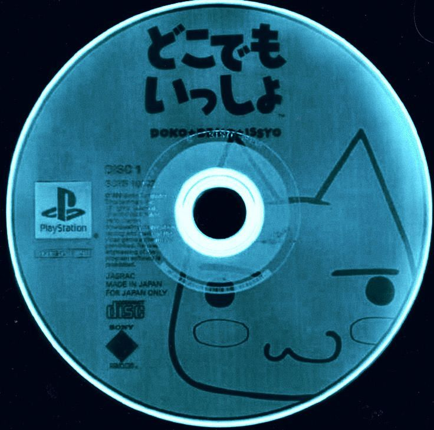

Welcome To My Website!
My name is amir my birthday is the 9th april and i go by he/him :3
Im algerian and i live in algiers (close to bab ezzouar)
I play many games (they're mentioned in the games section) and if u would like to play with me then i wouldn't mind
I like to watch anime and cartoons and movies on my free time
my fav colors are the light blue in the background and light yellow
im really into cyberpunk2077, deltarune, rick and morty, osu, geometry dash, and cs2 atm :p
i coded this entire website by myself (i used claude for a liiitle bit of help tho)
i love karting, sim racing, drifting.. and stuff like that
i like pineapples and coconuts (i fucking love the schweppes pineapple and coconut flavor and the pineapple only one)
made this website to get better at coding and cus im too lazy to answer ppl's questions even tho this is harder and takes much more time and i would really appreciate it if people gave their personal thoughts and opinions on this site so i could make it better and improve my skils on web dev and design
Add my accounts down bellow :p

This section should contain all my stuff (click on the icons)
my discord is: cre3pingde1th its my most used app i use it everyday i reply to everyone but i dont accept random friend requests so message me on insta then add me on discord.